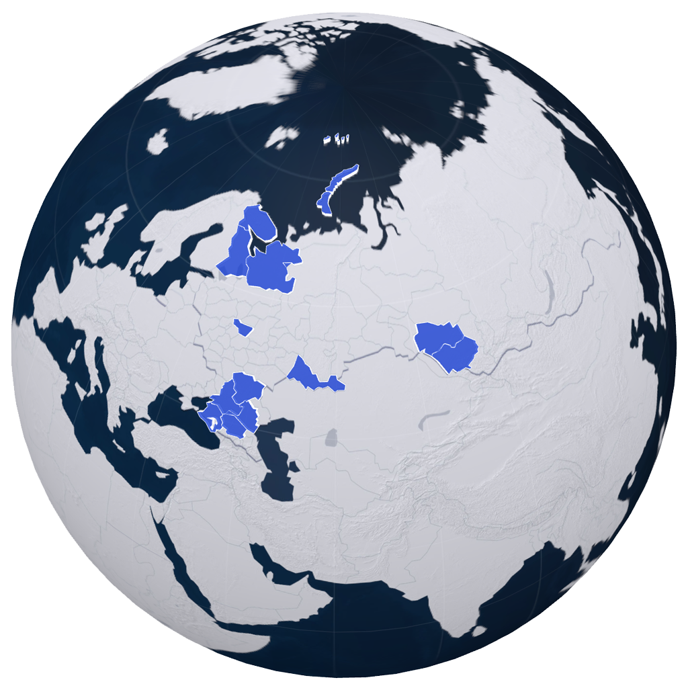
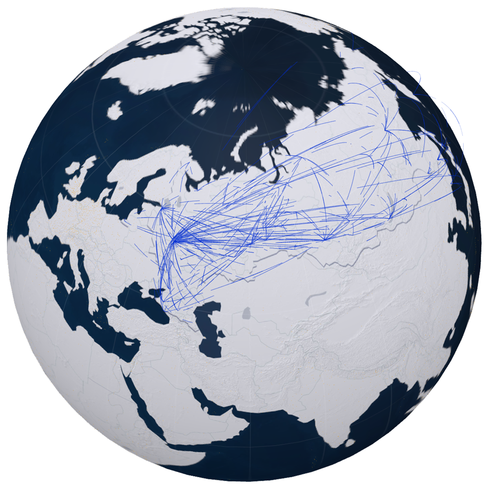

3D ВИЗУАЛИЦИИ: WebGL
Что-то там пу пу пу надо бы написать

Кастомный стиль
Полностью индивидуальный подбор красочного оттенка под любой корпоративный брендинг и офрмление
- 
Полигоны
Метод визуализации с выдавливанием полигонов наверх для выделения на контрасте одной страны или групп стран, по какому либо показателю для наглядного их отображения на глобусе
- 
Арочные линии
Метод визуализации с построением воздушных арчатых линейных маршрутов, подходит для нагляного отображения транспортного пермещения между точками и построении сложных маршрутов

Плоскостные линии
Метод визуализации с построением сухопутных и/или морских линейных маршрутов, подходит для нагляного отображения транспортной связи между разными точками на земной плоскости для демонстрации больших расстояний

Точечный слой
Метод визуализации с построением точечных объектов с конкретной геолокацией, подходит для нагляного отображения георафическго положения

Кольца
Метод визуализации с построением кольцевых пульсирующих оружностей, подходит для наглядного отображения силы действия землятресения в регионе, городе, местности

Столбы
Метод визуализации с построением столбов на основе какго-либо показателя, например численности населения, подходит для наглядного отображения больших весов в пунктах для наглядного сравнения и выявления закономерностей

Маркеры
Метод визуализации с построением маркерных точек на карте, подходит для отображения объекта и информации о нем, например офисы комании в регионах с упоминаем статистической информации
Что-то там пу пу пу надо бы написать
Кастомный стиль
Полностью индивидуальный подбор красочного оттенка под любой корпоративный брендинг и офрмление
3D ВИЗУАЛИЦИИ: WebGL
Что-то там пу пу пу надо бы написать
Кастомный стиль
Полностью индивидуальный подбор красочного оттенка под любой корпоративный брендинг и офрмление